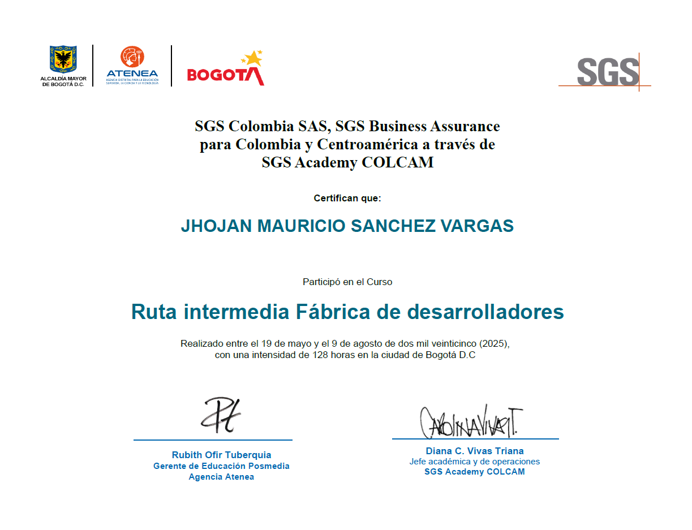
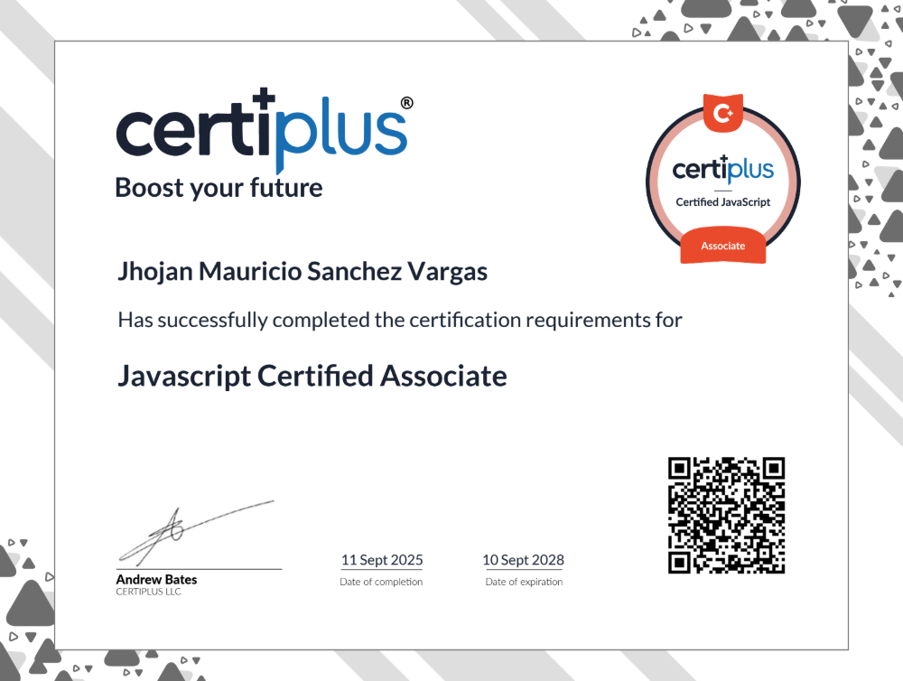
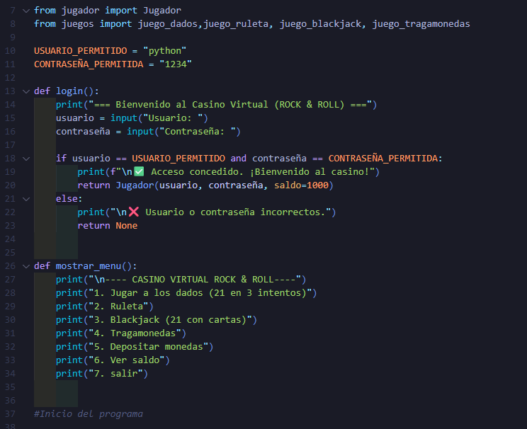
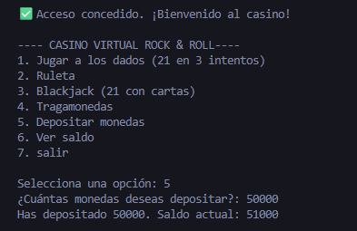
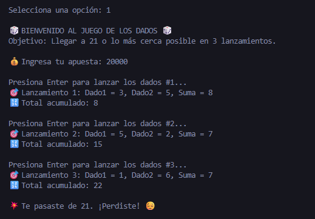
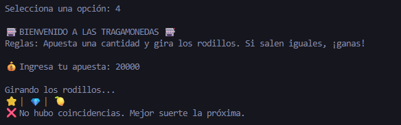
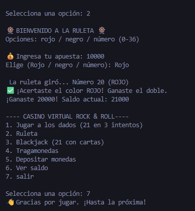

Jhojan Mauricio Sánchez
Ciudad: Soacha, Colombia
Teléfono: +57 320 200 4531
Email: j.ma7@hotmail.com
Perfil Profesional
Estudiante Técnico en Desarrollo Web con enfoque en desarrollo de software front-end y back-end. Cuento con conocimientos prácticos en HTML, CSS, JavaScript, Python, Java, Git y GitHub. aplicados en la creación de aplicaciones web dinámicas y funcionales.
Actualmente estoy estudiando bases de datos y profundizando en temas de programación y desarrollo de aplicaciones, con interés en la construcción e integración de APIs y el despliegue de soluciones en la nube.
Apasionado por la tecnología y el aprendizaje continuo, busco aplicar y fortalecer mis habilidades en entornos reales, contribuyendo al desarrollo de soluciones escalables, seguras y orientadas al usuario.
Formación Académica
- Técnico Laboral En Operación De Programas Informáticos Y Base De Datos - INCAP - Actualmente (Primer semestre culminado doble titulación) (2025)
- Técnico Laboral En Instalacion de redes y mantenimiento de computadores - INCAP - Actualmente (Primer semestre culminado doble titulación) (2025)
- Ingenieria en Seguridad Industrial e Higiene Ocupacional - Unihorizonte - Culminado (2022)
Cursos en Tecnología
-
Fábrica de Desarrolladores - Nivel Intermedio - SGS ACADEMY (Culminado 128 horas certificacion mayo - agosto, 2025)

- Javascript Certified Associate - Certiplus (Culminado vigencia 11 Sep 2025 - 10 Sep 2028)

- Oracle Next Education F2 T7 Back-end - Oracle/Alura (304 horas, 2024 - 2025) - Ver certificado
Habilidades Técnicas
- 💻 Lenguajes de Programación: HTML, CSS, JavaScript, Python, SQL, TypeScript,Java.
- 🧰 Herramientas y Entornos de Desarrollo: Visual Studio Code, IntelliJ IDEA, XAMPP, Postman, Figma, Canva.
- ⚙️ Frameworks y Librerías: Angular, Spring Boot, Node.js.
- 🗄️ Bases de Datos: MySQL, MariaDB.
- 🌐 Control de Versiones y Despliegue: Git, GitHub, Netlify.
- 🖥️ Sistemas Operativos: Windows, Linux (básico), Ubuntu.
- 🤖 Inteligencia Artificial y automatización: ChatGPT, DeepSeek, Claude, SAI, automatización con IA, análisis de datos con Python.
- 💡 Otras habilidades: Trabajo en equipo, resolución de problemas, adaptabilidad al cambio.
Prácticas
Proyecto ETB Stefanini (desarrollador de software) – (septiembre 2025 - actualmente)
Actualmente estoy participando como desarrollador de software front-end, utilizando Angular para la creacion de interfaces modernas y optimizadas.
Proyecto Coomeva Stefanini (QA Tester) – 6 meses (diciembre 2024 - mayo 2025)
Participación como QA en la plataforma MIMUTUAL. Las actividades incluyeron documentación y validación de pruebas funcionales, análisis de datos en bases relacionales, elaboración de informes de errores e incidencias, así como verificación de calidad en diferentes módulos operativos del sistema.
Stefanini (Analista SST) – 5 años (junio 2020 - agosto 2025)
Elaboración de informes e indicadores en Power BI, gestión de bases de datos y seguimiento de procesos internos para reportes y auditorías.
Proyectos
Tienda virtual – Ver proyecto
Desarrollo de una tienda virtual funcional como proyecto final universitario, utilizando HTML, CSS y JavaScript. Permite a los usuarios explorar productos, agregar al carrito y enviar un formulario de contacto. Diseño responsive y funcionalidades interactivas. Desplegado en Netlify.
Cronograma de semana de la salud – Ver proyecto
Desarrollo de un cronograma de las actividades de la semana de la salud donde antes se mostraba un conteo regresivo para generar espectativa del evento, se puede visualizar todas las actividades por dia y si son de manera virtual y presencial, con un reproductor de musica y imagenes para ver las diferentes actividades utilizando HTML, CSS y JavaScript. Desplegado en Netlify.
Proyecto de Python de casino virtual
Desarrollado en Python, aplicando estructuras de control, funciones y programación orientada a objetos. Permite al usuario iniciar sesión, gestionar su saldo y acceder a distintos juegos de azar mediante un menú interactivo en consola.





Referencias laborales
Laura Corredor (LATAM Talent Acquisition Manager) - 3016712724
Cristian Javier Gutierrez (Delivery Manager) - 3123697427
Jennifer Torrijos (Analista de infraestructura) - 3187864027